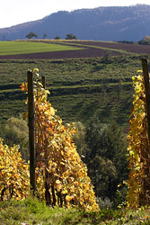
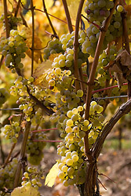

Philosophie
Der Wein ist die edelste Verkörperung des Naturgeistes.
Friedrich Hebbel
 Im Mittelpunkt einer gepflegten Ess- und Trinkkultur steht der Wein. Ob ein gutes Glas zum Essen oder der Spitzenwein für den ganz besonderen Anlass: ein guter Wein ist ein Stück Lebensqualität.
Das Weingut Serrig produziert hochwertige Weine aus der Pfalz nach den Kriterien des kontrolliert umweltschonenden Weinbaus.
Ernte und Produktion
 Bei uns werden die Weinberge nach alter Tradition mit der Hand geerntet. Faule und unreife Trauben werden sorgfältig aussortiert. Wir nehmen nur das Beste für unseren Wein.
Der Wein wird ohne Stiel gekeltert und lagert zum Reifen in hochwertigen Holzfässern.
Kontrolliert umweltschonender Weinbau
Wir schenken Ihnen "reinen Wein" ein.
Seit 1995 gehört das Weingut Serrig dem Beratungsring "Kontrolliert Umweltschonender Weinbau" (KUW) in der Pfalz an. Das Signet "Umweltschonend erzeugt - Rheinland-Pfalz kontrolliert" garantiert Ihnen einen gesunden Genuss.
Wir halten uns an den Kriterienkatalog für KUW. Dadurch werden Umweltbelastungen weitestgehend reduziert.
Durch regelmäßige Bodenuntersuchungenen wird der tatsächliche Nährstoffbedarf der Reben ermittelt. So kann nach Bedarf gedüngt werden. Dies entlastet die Gewässer und reduziert die Anfälligkeit der Reben für Krankheiten.
Wir setzen keine Herbizide ein sondern setzen bei der Unkrautbekämpfung auf mechanische Methoden. Die Weinberge werden begrünt, um Erosion und Bodenverdichtung zu verhindern.